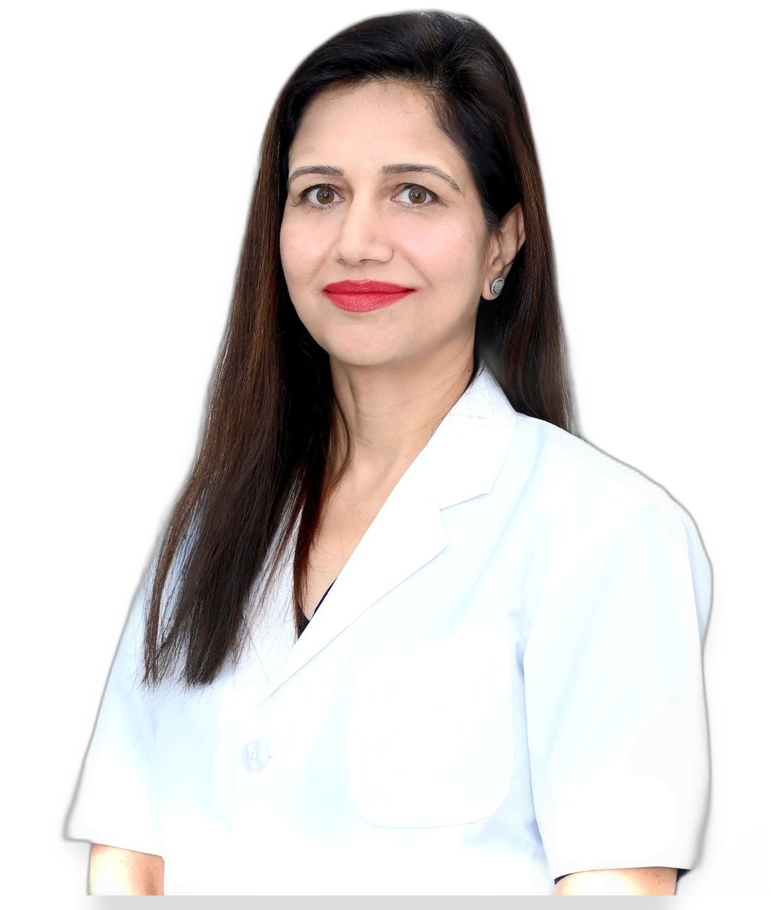

Dr. Jeenu Priya Tyagi is a Senior Phaco (Cataract), Cornea & Refractive (LASIK) Surgeon — a powerful example of dedication, excellence, and compassion in ophthalmology. She has received high-level training from India's most prestigious eye institutions, including Sankara Nethralaya (Chennai), Aravind Eye Care System (Madurai), New Vision Laser Centre (Vadodara), B.J. Medical College, Ahmedabad (MBBS), and M & J Regional Institute of Ophthalmology, Ahmedabad.
She specialises in Advanced MICS (Micro-Incision Cataract Surgery with Premium IOL), corneal procedures, LASIK & Refractive Surgery, and Glaucoma surgery and medical management. Her surgical precision and mastery of modern techniques make her a regular invitee to national and international conferences — where she teaches cataract and corneal surgery techniques and contributes to research in modern ophthalmology.
Dr. Tyagi has actively participated in the Asia-Pacific Academy of Ophthalmology (APAO) Congress, All India Ophthalmology Society, WOS, UPSOS, All India ARC, AIOS, and Victor DOS Congress (2019–2025), sharing expertise on complex eye conditions and their prevention to advance both public awareness and professional knowledge.
Stitchless Micro Incision Cataract Surgery with premium foldable IOL implants. No injections, no pain, same-day discharge.
LASIK and SMILE for permanent correction of myopia, hyperopia, and astigmatism. Freedom from glasses and contact lenses.
Early detection and treatment of glaucoma (काला पानी) including medication, SLT laser, and surgical drainage.
Diabetic retinopathy, retinal detachment, macular degeneration, and intravitreal injection therapy.
Corneal ulcer management, keratoconus treatment, and corneal transplantation (PKP / DALK / DSEK / DMEK).
Vision correction for patients with very high spectacle power who are not suitable for LASIK.
Eyelid surgeries, ptosis correction, and management of lacrimal (tear duct) conditions.
Routine consultations, refraction, fundus evaluation, OCT imaging, and laser photocoagulation.
Patient guides written by Dr. Tyagi — in plain language, no jargon.